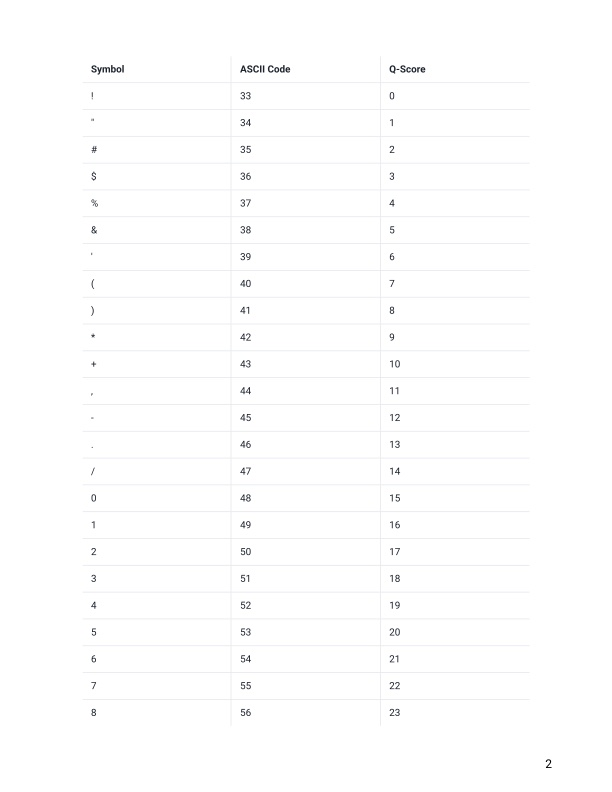

3 Week 2- Working with Files
We will be following some of the data carpentry tutorial again (Copyright 2016 @ Software Carpentry) “Introduction to the command line for genomics”. We have made some modifications to the data carpentry tutorial to fit our course.
3.1 Main Objectives:
- Learn how to use navigational shortcuts and repeat recently used commands to make coding more efficient
- Learn how to view and work with hidden directories and hidden files
- Learn how to view and search file contents
3.3 Details on the FASTQ format
A fastq file is a text file with information on the quality of the sequence data
Although it looks complicated (and it is), it’s easy to understand the fastq format with a little decoding. Some rules about the format include…
| Line | Description |
|---|---|
| 1 | Always begins with ‘@’ and then information about the read |
| 2 | The actual DNA sequence |
| 3 | Always begins with a ‘+’ and sometimes the same info in line 1 |
| 4 | Has a string of characters which represent the quality (phred) scores; must have same number of characters as line 2 |
3.4 Our data set: FASTQ files
We can use the command wget which needs a link to the file that we want to download. If there’s a file saved on a website somewhere (anywhere on the internet) wget will download it for you. If our data file is on github, which is where most of our data will be stored, we’ll use the command git-clone
In this example we’re going to download all the material in our individual directory. Navigate there and then type the following command:
Use the tar command to uncompress the file. This will also automatically make a week2 directory in your individual directory:
Check out what is in this directory with the ls command. Remember you can do ls -l to see more information on the contents
Now that we know how to navigate around our directory structure, let’s start working with our sequencing files. We did a sequencing experiment and have two results files, which are stored in our untrimmed_fastq directory.
3.5 Wildcards
Navigate to your untrimmed_fastq directory in your week2 individual directory
We are interested in looking at the FASTQ files in this directory. We can list all files with the .fastq extension using the command:
The * character is a special type of character called a wildcard, which can be used to represent any number of any type of character.
Thus, *.fastq matches every file that ends with .fastq.
This command:
lists only the file that ends with 977.fastq.
This command:
Lists every file in /usr/bin that ends in the characters .sh.
Note that the output displays full paths to files, since
each result starts with /.
This directory contains two files with .fastq extensions. FASTQ is a format for storing information about sequencing reads and their quality. We will be learning more about FASTQ files in a later lesson.
echo is a built-in shell command that writes its arguments, like a line of text to standard output.
The echo command can also be used with pattern matching characters, such as wildcard characters.
Here we will use the echo command to see how the wildcard character is interpreted by the shell.
The * is expanded to include any file that ends with .fastq. We can see that the output of
echo *.fastq is the same as that of ls *.fastq.
What would the output look like if the wildcard could not be matched? Compare the outputs of
echo *.missing and ls *.missing.
Class Exercise 1
Do each of the following tasks from your current directory using a single
lscommand for each:
- List all of the files in
/usr/binthat start with the letter ‘c’.- List all of the files in
/usr/binthat contain the letter ‘a’.- List all of the files in
/usr/binthat end with the letter ‘o’.Bonus: List all of the files in
/usr/binthat contain the letter ‘a’ or the letter ‘c’.Hint: The bonus question requires a Unix wildcard that we haven’t talked about yet. Try searching the internet for information about Unix wildcards to find what you need to solve the bonus problem.
3.6 Command History
If you want to repeat a command that you’ve run recently, you can access previous commands using the up arrow on your keyboard to go back to the most recent command. Likewise, the down arrow takes you forward in the command history.
A few more useful shortcuts:
- Ctrl+C will cancel the command you are writing, and give you a fresh prompt.
- Ctrl+R will do a reverse-search through your command history. This is very useful.
- Ctrl+L or the
clearcommand will clear your screen.
You can also review your recent commands with the history command, by entering:
to see a numbered list of recent commands. You can reuse one of these commands directly by referring to the number of that command.
For example, if your history looked like this:
then you could repeat command #260 by entering:
Type ! (exclamation point) and then the number of the command from your history.
You will be glad you learned this when you need to re-run very complicated commands.
For more information on advanced usage of history, read section 9.3 of
Bash manual.
3.7 Examining Files
We now know how to switch directories, run programs, and look at the contents of directories, but how do we look at the contents of files?
One way to examine a file is to print out all of the
contents using the program cat.
Enter the following command from within the untrimmed_fastq directory:
This will print out all of the contents of the SRR098026.fastq to the screen.
Class Exercise 2
- Print out the contents of the
~/group/rbaygrp/eve198-genomics/'yourdirectory'/Week2/untrimmed_fastq/SRR097977.fastqfile. What is the last line of the file?- From your home directory, and without changing directories, use one short command to print the contents of all of the files in the
group/rbaygrp/eve198-genomics/yourdirectory/week2/untrimmed_fastqdirectory.
cat is a terrific program, but when the file is really big, it can
be annoying to use. The program, less, is useful for this
case. less opens the file as read only, and lets you navigate through it. The navigation commands
are identical to the man program.
Enter the following command:
Some navigation commands in less:
| key | action |
|---|---|
| Space | to go forward |
| b | to go backward |
| g | to go to the beginning |
| G | to go to the end |
| q | to quit |
less also gives you a way of searching through files. Use the
“/” key to begin a search. Enter the word you would like
to search for and press enter. The screen will jump to the next location where
that word is found.
Shortcut: If you hit “/” then “enter”, less will repeat
the previous search. less searches from the current location and
works its way forward. Scroll up a couple lines on your terminal to verify
you are at the beginning of the file. Note, if you are at the end of the file and search
for the sequence “CAA”, less will not find it. You either need to go to the
beginning of the file (by typing g) and search again using / or you
can use ? to search backwards in the same way you used / previously.
For instance, let’s search forward for the sequence TTTTT in our file.
You can see that we go right to that sequence, what it looks like,
and where it is in the file. If you continue to type / and hit return, you will move
forward to the next instance of this sequence motif. If you instead type ? and hit
return, you will search backwards and move up the file to previous examples of this motif.
Class Exercise 3
What are the next three nucleotides (characters) after the first instance of the sequence quoted above?
Remember, the man program actually uses less internally and
therefore uses the same commands, so you can search documentation
using “/” as well!
There’s another way that we can look at files, and in this case, just look at part of them. This can be particularly useful if we just want to see the beginning or end of the file, or see how it’s formatted.
The commands are head and tail and they let you look at
the beginning and end of a file, respectively.
@SRR098026.1 HWUSI-EAS1599_1:2:1:0:968 length=35
NNNNNNNNNNNNNNNNCNNNNNNNNNNNNNNNNNN
+SRR098026.1 HWUSI-EAS1599_1:2:1:0:968 length=35
!!!!!!!!!!!!!!!!#!!!!!!!!!!!!!!!!!!
@SRR098026.2 HWUSI-EAS1599_1:2:1:0:312 length=35
NNNNNNNNNNNNNNNNANNNNNNNNNNNNNNNNNN
+SRR098026.2 HWUSI-EAS1599_1:2:1:0:312 length=35
!!!!!!!!!!!!!!!!#!!!!!!!!!!!!!!!!!!
@SRR098026.3 HWUSI-EAS1599_1:2:1:0:570 length=35
NNNNNNNNNNNNNNNNANNNNNNNNNNNNNNNNNN+SRR098026.247 HWUSI-EAS1599_1:2:1:2:1311 length=35
#!##!#################!!!!!!!######
@SRR098026.248 HWUSI-EAS1599_1:2:1:2:118 length=35
GNTGNGGTCATCATACGCGCCCNNNNNNNGGCATG
+SRR098026.248 HWUSI-EAS1599_1:2:1:2:118 length=35
B!;?!A=5922:##########!!!!!!!######
@SRR098026.249 HWUSI-EAS1599_1:2:1:2:1057 length=35
CNCTNTATGCGTACGGCAGTGANNNNNNNGGAGAT
+SRR098026.249 HWUSI-EAS1599_1:2:1:2:1057 length=35
A!@B!BBB@ABAB#########!!!!!!!######The -n option to either of these commands can be used to print the
first or last n lines of a file.
We can view the first complete read in one of the files in our dataset by using head to look at
the first four lines.
@SRR098026.1 HWUSI-EAS1599_1:2:1:0:968 length=35
NNNNNNNNNNNNNNNNCNNNNNNNNNNNNNNNNNN
+SRR098026.1 HWUSI-EAS1599_1:2:1:0:968 length=35
!!!!!!!!!!!!!!!!#!!!!!!!!!!!!!!!!!!All but one of the nucleotides in this read are unknown (N). This is a pretty bad read!
Line 4 shows the quality for each nucleotide in the read. Quality is interpreted as the probability of an incorrect base call (e.g. 1 in 10) or, equivalently, the base call accuracy (e.g. 90%). To make it possible to line up each individual nucleotide with its quality score, the numerical score is converted into a code where each individual character represents the numerical quality score for an individual nucleotide. For example, in the line above, the quality score line is:
The # character and each of the ! characters represent the encoded quality for an
individual nucleotide. The numerical value assigned to each of these characters depends on the
sequencing platform that generated the reads. The sequencing machine used to generate our data
uses the standard Sanger quality PHRED score encoding, Illumina version 1.8 onwards.
Here is a link showing what those different symbols mean for quality scores: https://help.basespace.illumina.com/files-used-by-basespace/quality-scores
Each character is assigned a quality score between 0 and 42 as shown in the chart below.
Quality encoding: !"#$%&'()*+,-./0123456789:;<=>?@ABCDEFGHIJK
| | | | |
Quality score: 0........10........20........30........40.. Each quality score represents the probability that the corresponding nucleotide call is incorrect. This quality score is logarithmically based, so a quality score of 10 reflects a base call accuracy of 90%, but a quality score of 20 reflects a base call accuracy of 99%. These probability values are the results from the base calling algorithm and dependent on how much signal was captured for the base incorporation.
Looking back at our read:
@SRR098026.1 HWUSI-EAS1599_1:2:1:0:968 length=35
NNNNNNNNNNNNNNNNCNNNNNNNNNNNNNNNNNN
+SRR098026.1 HWUSI-EAS1599_1:2:1:0:968 length=35
!!!!!!!!!!!!!!!!#!!!!!!!!!!!!!!!!!!we can now see that the quality of each of the Ns is 0 and the quality of the only
nucleotide call (C) is also very poor (# = a quality score of 2). This is indeed a very
bad read.
3.8 Group Work Activity- Examining a Fastq File
Navigate to eve198-genomics and copy the ‘CCGPMC004_M0D060025C_S150_L003_R1_001.fastq.gz’ file in the week2_activity directory to your individual directory.
Next you will need to unzip the fastq file. To do this we will use the command “gunzip”. This unzips a gzipped file. “gzip” zips a file again. It will take a second since this is a larger file than our previous examples. It is actually an urchin sample from a recent genomics project Rachael and I worked on!
Then answer the following questions and submit them to the “Week 2: Examining Files” assignment on canvas. I would not recommend using ‘less’ or ‘cat’ on this file due to its size.
- Write out the first two lines of CCGPMC004_M0D060025C_S150_L003_R1_001.fastq
- Remember that line 4 in a fastq file shows the quality (phred) scores. If you look at line 4 and reference the score table from the link and figures below. What is the most common symbol, Q-score and error probability for most of our nucleotide calls?
https://help.basespace.illumina.com/files-used-by-basespace/quality-scores 
3.9 Key Points
The /, ~, and .. characters represent important navigational shortcuts.
The
historycommand and the up arrow on your keyboard can be used to repeat recently used commands.You can view file contents using
less,cat,headortail.
Class Exercise Solutions
Exercise 1: Solution
ls /usr/bin/c*ls /usr/bin/*a*ls /usr/bin/*o
Bonus:ls /usr/bin/*[ac]*Exercise 2: Solution
- The last line of the file is
C:CCC::CCCCCCCC<8?6A:C28C<608'&&&,'$.cat ./~/group/rbaygrp/eve198-genomics/yourdirectory/week2/untrimmed_fastq/*## Exercise 3: SolutionCAC